Polskie karty¶
Wszystkie karty zostały przygotowane w programie Magic Set Editor.
W miarę możliwości starałem się korzystać ze zdjęć lub rysunków zrobionych w Polsce lub z Polską się kojarzących.
Lądy¶
- Las (Forest)
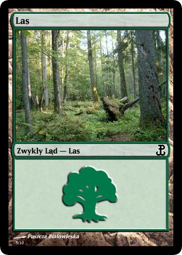

- Wyspa (Island)
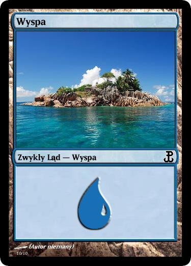
- Góra (Mountain)
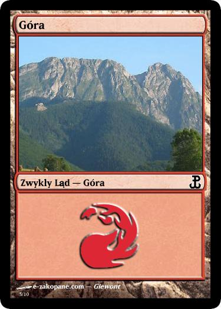 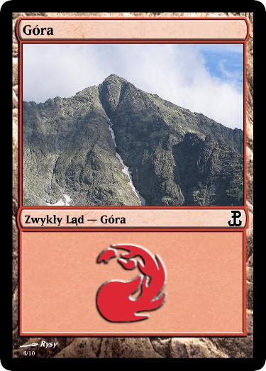
- Równina (Plains)
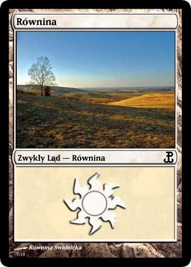 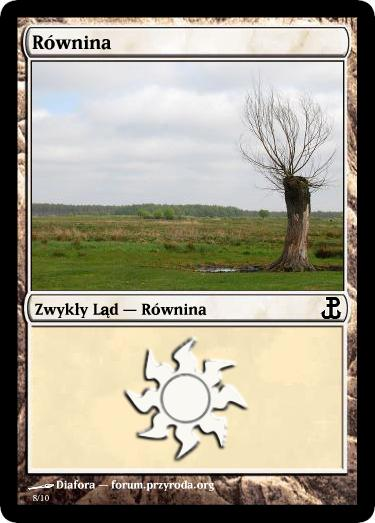 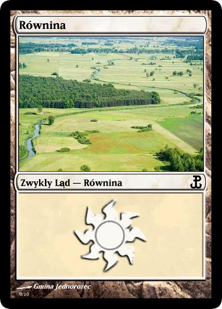
- Bagno (Swamp)
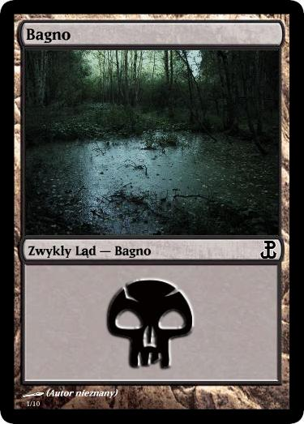 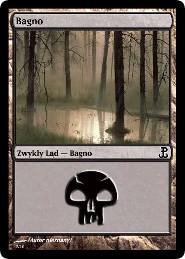
Żetony¶
- Bestia (Beast)
Pojawia się w znacznej części dodatków, ostatnio w Magic 2013.
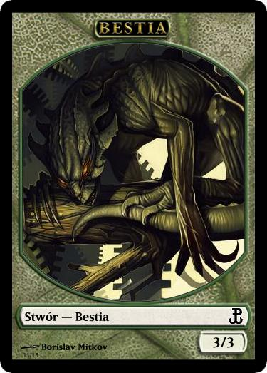 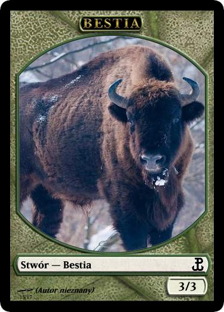 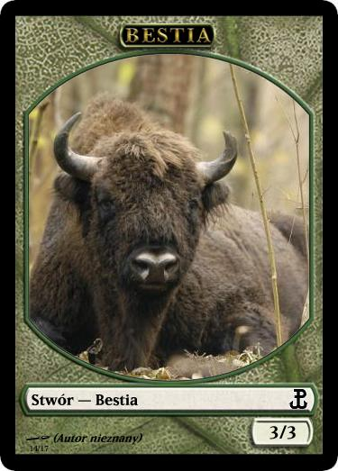
- Ptak (Bird) Niebieski
Pojawił się w dodatku Theros.
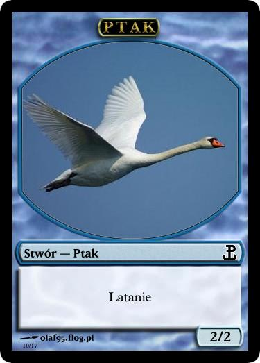
- Ptak (Bird) Biały
Pojawia się w sporej części dodatków, ostatnio w bloku Return to Ravnica.
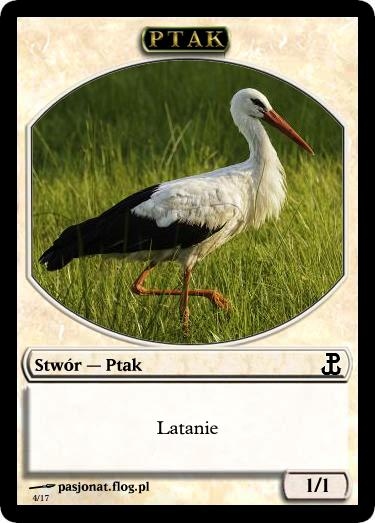 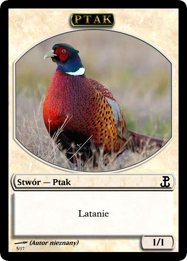
- Knur (Boar)
Pojawił się w dodatku Theros.
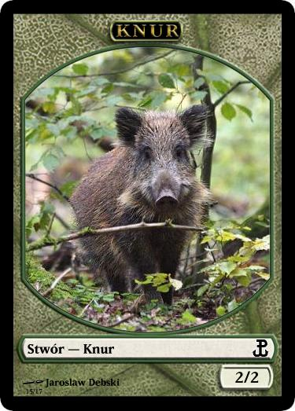
- Rycerz (Knight)
Obecny w bloku Return to Ravnica
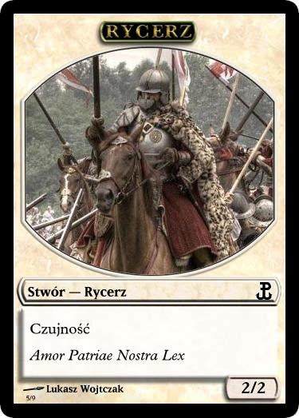 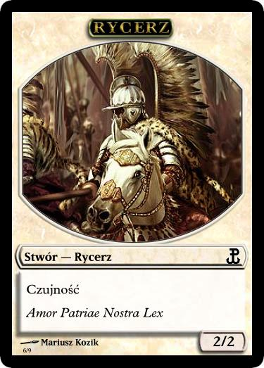 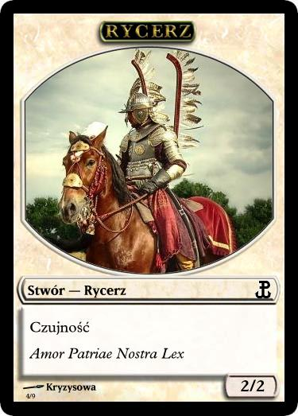 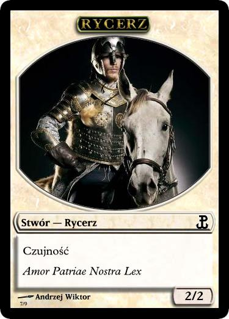
- Drzazgul (Sliver)
Obecny w podstawce Magic 2014.
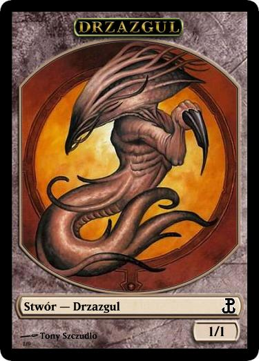
- Piechur (Soldier) Biały
Obecny niemal w każdym bloku.
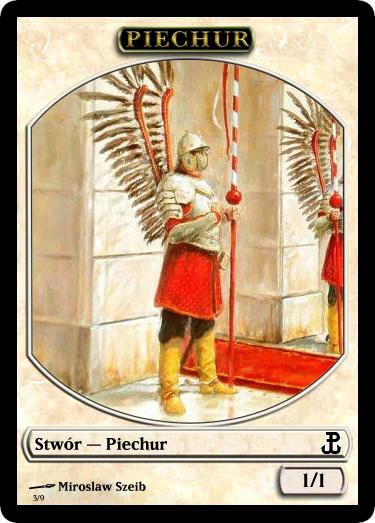 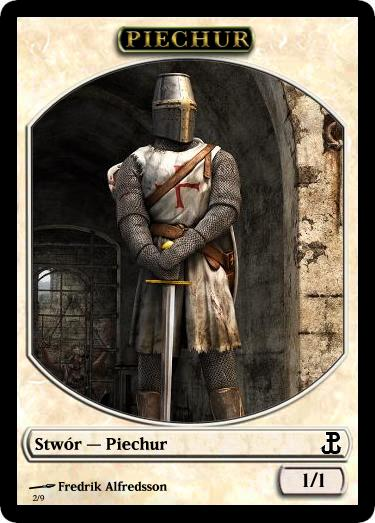
- Piechur (Soldier) Czerwony
Ostatnio pojawił się w bloku Theros
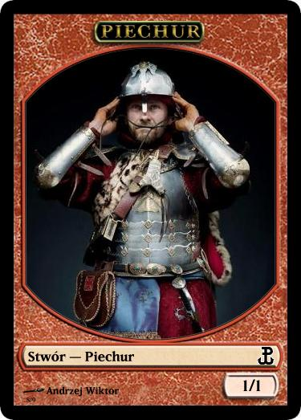
- Piechur (Soldier) Czerwono-Biały
Ostatnio pojawił się w bloku Return to Ravnica
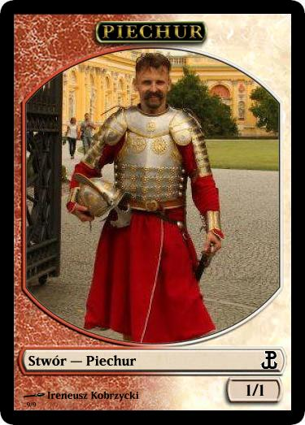
- Wilk (Wolf)
Pojawia się w sporej części dodatków, ostatnio w Magic 2013.
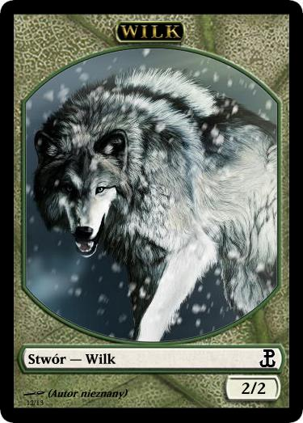